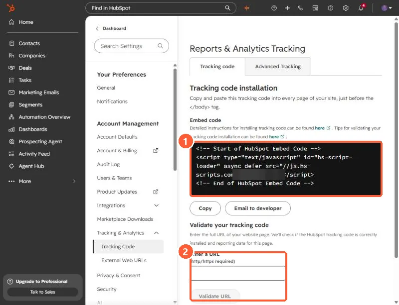

Short answer
A site with HubSpot's tracking code loads a script from js.hs-scripts.com/<Hub ID>.js. View the page source and search for hs-scripts.com. A site that only loads hsforms.net has embedded forms but not necessarily tracking. To scan a list of domains, fetch each homepage and look for those two strings. I used this on about 5,700 company sites: roughly 600 had the tracking code and about 100 more loaded forms only.
1. What the code looks like
Open Tracking & Analytics settings. The Tracking code tab shows the embed code for your account. It is a small script tag that loads a file named after your Hub ID from js.hs-scripts.com. The Hub ID in the screenshot is blurred.


2. Check one site by hand
HubSpot's own steps: open a page on the site, right-click, choose View page source, then search for the Hub ID followed by .js. You may see the HubSpot Embed Code or the Async HubSpot Analytics Code, and both count as tracking code. To confirm it is loading, open the browser's Network tab, refresh, and look for the Hub ID file with a 200 or 304 status.
3. Validate your own installation
On the same settings page, enter the full URL (with http or https) in Validate your tracking code. HubSpot tests the page and emails you the result. Some sites cannot be tested this way and can give a false failure, so fall back to the manual check above.
4. Scan a list of domains
If you want to know which companies in your CRM run HubSpot, fetch each homepage and search the HTML. Two strings matter:
hs-scripts.com/ tracking code, followed by the Hub ID
hsforms.net HubSpot forms embedded, tracking may be absent- Record the Hub ID so you can tell which account it is.
- Keep "forms only" separate from "tracking code". They are different signals.
- Some sites load tracking through a tag manager, which a simple HTML fetch will miss. Treat a miss as unknown, not as proof of no HubSpot.
- Write results to a property you control, such as a yes or no field, and review a sample before writing in bulk.
Fetch one page per site, pace your requests, and identify your script in the user agent.